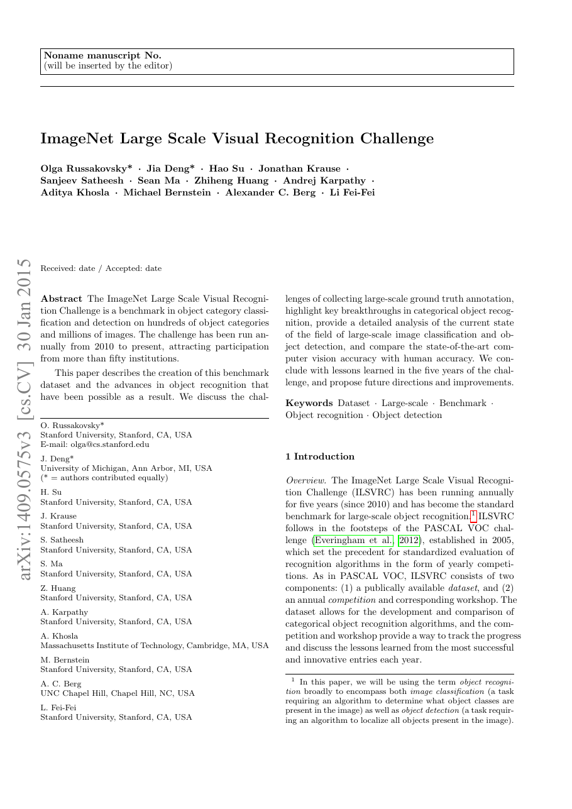

1. Paper Info
ImageNet Large Scale Visual Recognition Challenge
| Title | ImageNet Large Scale Visual Recognition Challenge (ImageNet大规模视觉识别挑战赛综合报告) |
| Authors | Olga Russakovsky, Jia Deng (邓嘉), Hao Su, Jonathan Krause, Sanjeev Satheesh, Sean Ma, Zhiheng Huang, Andrej Karpathy, Aditya Khosla, Michael Bernstein, Alexander C. Berg, Li Fei-Fei (李飞飞, 通讯) |
| Affiliation | Stanford University (斯坦福大学计算机科学系), UNC Chapel Hill, Dartmouth College |
| Venue | IJCV (International Journal of Computer Vision), 2015, Vol. 115, pp. 211–252 (42 页) |
| DOI | 10.1007/s11263-015-0816-y | Submitted 2014-06 | Accepted 2015-01 | Published 2015-04 |
| TL;DR | 这是ILSVRC 2010–2014五年竞赛的官方综合技术报告，记录了从传统手工特征(SIFT+Fisher Vectors, top-5 错误率 28.2%)到深度学习(AlexNet 16.4% → GoogLeNet 6.7%)的完整范式转换。论文详述了三个核心贡献：(1) 数据集构建方法论——从WordNet 21,841个synset中精选1000个细粒度类别，通过众包流水线(MTurk)标注了1.2M+训练图片；(2) 三类任务定义——分类(top-5 error)、单目标定位(IoU>0.5)、目标检测(mAP@200类)——形成递进的能力金字塔；(3) 五年系统误差分析——建立人类基线(~5.1%)，量化细粒度混淆与标注歧义，揭示模型进步的真正瓶颈。这篇42页的长文是理解"深度学习视觉革命为何始于ImageNet"的必读参考文献。 |
2. Insight & Novelty
2.1 Core Insight — Q&A
2.2 Inspiration-to-Insight Knowledge Mapping
| Inspiration Source | Insight Derived | Type |
|---|---|---|
| WordNet (Miller, 1995) — 语言学层级词汇本体 | 利用WordNet的synset语义树构建类别体系——1000个类别不是任意的, 而是有语义距离定义的(is-a层级)。这使得错误分析不仅能量化"错了多少", 还能度量"错得多远"(把Siberian husky误判为Alaskan malamute vs 误判为automobile, 语义严重性截然不同)。这直接催生了层级化错误度量(hierarchical error)的设计。 | 架构灵感 |
| Amazon Mechanical Turk + 统计质量控制 | 证明了大规模细粒度标注可以工程化、可扩展、可审计——通过多阶段冗余标注(候选收集→正例验证→负例排除→边界框标注)、统计一致性检查(kappa系数)、异常标注者剔除等机制, 将人工标注从"手工作坊"升级为"生产线"。这套方法论被COCO、OpenImages等所有后继大规模数据集继承。 | 方法/工程 |
| Caltech-101/PASCAL VOC 的局限性 | 小规模基准存在"天花板效应"——类内方差太小(Caltech-101同类图片过于相似)、类别数太少(PASCAL仅20类), 导致简单方法即可饱和, 基准失去区分度。ILSVRC刻意选择120种狗、150种鸟等细粒度+高类内方差的类别, 迫使模型必须学习真正的语义抽象能力而非记忆纹理模板。 | 策略设计 |
| AlexNet (2012) 的震撼性突破 | 2011冠军(手工特征, 25.8%) → 2012 AlexNet(深度学习, 16.4%)的单年9.4%绝对值降幅, 超过了2010-2011两年总进步(2.4%)的近4倍。这不是渐进改进, 而是范式级别的相变——它用不可辩驳的数据证明了"学习特征"(learned features)远比"手工特征"(hand-crafted features)强大, 直接引发了整个计算机视觉领域的"深度学习大迁徙"。 | 验证性证据 |
2.3 Three Key Novelty Cards
Novelty 1: 第一个真正"大规模+细粒度+严格评估"的视觉基准
Novelty 2: 多任务-多年度系统错误分析与人类基线的元研究框架
Novelty 3: 以五年完整数据验证了"数据+深度+算力"三位一体的范式正确性
3. ILSVRC Benchmark Architecture
3.0 Four-Stage Pipeline Overview
Stage 1: Data Pipeline 14M+ imgs
Stage 2: Task Definition 3 tasks
Stage 3: Evaluation Protocol Fairness
Stage 4: Meta-Analysis Error Decomp.
3.1 Mermaid Flowchart A — ILSVRC Task System Architecture
flowchart TB
subgraph DATA["ImageNet Full Database (14M+ images, 21,841 WordNet synsets)"]
FULL["Full ImageNet · WordNet Hierarchy · Crowdsourced Annotation Pipeline"]
SUBSET["ILSVRC Subset · 1000 Classes · train/val/test Split (1.2M/50K/100K)"]
end
subgraph TASK1["Task 1: Classification"]
C_IN["Input: single image, one ground-truth label y ∈ {1,...,1000}"]
C_OUT["Output: top-5 class predictions sorted by confidence"]
C_METRIC["Metric: top-5 error rate · any of 5 matches = correct"]
end
subgraph TASK2["Task 2: Single-Object Localization"]
L_IN["Input: single image, GT label + GT bounding box"]
L_OUT["Output: 5 (class, bbox) predictions"]
L_METRIC["Metric: top-5 class correct AND IoU > 0.5 simultaneously"]
end
subgraph TASK3["Task 3: Object Detection (200 classes)"]
D_IN["Input: single image, multiple objects, 200 classes"]
D_OUT["Output: (class, bbox, confidence) per detected object, capped per image"]
D_METRIC["Metric: mAP (mean Average Precision) · PASCAL VOC standard"]
end
subgraph EVAL["Evaluation Protocol"]
HIDDEN["Test labels hidden from participants"]
SERVER["Unified evaluation server · submission-limit enforced"]
RANK["Annual public leaderboard · transparent ranking"]
end
SUBSET --> C_IN & L_IN & D_IN
C_IN --> C_OUT --> C_METRIC
L_IN --> L_OUT --> L_METRIC
D_IN --> D_OUT --> D_METRIC
C_METRIC & L_METRIC & D_METRIC --> SERVER
SERVER --> RANK
classDef data fill:#fff7ed,stroke:#f59e0b,stroke-width:2px,color:#92400e
classDef task fill:#e8f0fe,stroke:#3b82f6,stroke-width:2px,color:#1d4ed8
classDef eval fill:#e6f7ee,stroke:#10b981,stroke-width:2px,color:#047857
class FULL,SUBSET data
class C_IN,C_OUT,C_METRIC,L_IN,L_OUT,L_METRIC,D_IN,D_OUT,D_METRIC task
class HIDDEN,SERVER,RANK eval
3.2 Mermaid Flowchart B — Five-Year Technology Evolution (2010–2014)
flowchart TB
subgraph ERA1["2010–2011: Hand-Crafted Feature Era"]
direction LR
Y2010["2010 Winner: NEC-UIUC · SIFT + Fisher Vectors + Linear SVM · 28.2% top-5 err"]
Y2011["2011 Winner: XRCE · Improved Fisher Vectors + one-vs-all · 25.8% top-5 err"]
end
subgraph ERA2["2012: The Deep Learning Revolution"]
direction LR
Y2012_M["AlexNet (Krizhevsky, Sutskever, Hinton) · 8-layer CNN · 5 conv + 3 fc"]
Y2012_R["16.4% top-5 err · 9.4% absolute drop · ReLU + Dropout + 2-GPU training · 60M params"]
end
subgraph ERA3["2013: Architecture Refinement"]
direction LR
Y2013_M["ZFNet / Clarifai · Improved CNN (smaller stride, better viz) · ALL entrants use CNNs"]
Y2013_R["11.7% top-5 err · 4.7% drop · Detection task launched · Selective Search + CNN features"]
end
subgraph ERA4["2014: The Depth Race"]
direction LR
Y2014_A["GoogLeNet: 22 layers · Inception modules · 1×1 bottleneck · 5M params · 6.7% err"]
Y2014_B["VGG: 19 layers · all 3×3 conv · 144M params · 7.3% err"]
Y2014_C["R-CNN: region proposals + CNN + SVM · Detection mAP 43.9% (nearly 2× vs 2013)"]
end
subgraph ERA5["Human Baseline"]
HUMAN["Single trained human expert (A. Karpathy): ~5.1% top-5 err"]
GAP["Gap: GoogLeNet 6.7% vs Human 5.1% = 1.6% · mostly annotation noise, not model deficiency"]
end
Y2010 --> Y2011
Y2011 -->|"paradigm shift: +9.4% abs improvement"| Y2012_M
Y2012_M --> Y2012_R
Y2012_R -->|"100% CNN adoption"| Y2013_M
Y2013_M --> Y2013_R
Y2013_R -->|"depth competition"| Y2014_A
Y2013_R -->|"depth competition"| Y2014_B
Y2013_R -->|"R-CNN revolution"| Y2014_C
Y2014_A & Y2014_B --> GAP
GAP --> HUMAN
classDef era1 fill:#f3f4f6,stroke:#9ca3af,stroke-width:2px,color:#4b5563
classDef era2 fill:#fef3c7,stroke:#f59e0b,stroke-width:2px,color:#92400e
classDef era3 fill:#e8f0fe,stroke:#3b82f6,stroke-width:2px,color:#1d4ed8
classDef era4 fill:#f0ebfd,stroke:#8b5cf6,stroke-width:2px,color:#6d28d9
classDef era5 fill:#e6f7ee,stroke:#10b981,stroke-width:2px,color:#047857
class Y2010,Y2011 era1
class Y2012_M,Y2012_R era2
class Y2013_M,Y2013_R era3
class Y2014_A,Y2014_B,Y2014_C era4
class HUMAN,GAP era5
4. Task — Formal Problem Definition
4.1 Classification Task
4.2 Single-Object Localization Task
4.3 Object Detection Task
4.4 Task Summary — Capability Pyramid
| Task | Input | Output | Metric | Core Difficulty |
|---|---|---|---|---|
| Classification | Single image, 1 GT label | Top-5 class predictions | Top-5 error rate | 1000-way fine-grained discrimination |
| Localization | Single image, GT label + GT bbox | 5 (class, bbox) pairs | Top-5 error + IoU > 0.5 | Classification AND precise spatial extent (what + where for 1 object) |
| Detection | Single image, unknown # of objects, 200 classes | K (class, bbox, confidence) tuples | mAP across 200 classes | Unknown count + class + location + scale (what + where + how many) |
ILSVRC的设计哲学是"定义问题, 不限定方法": 参赛者可以自由使用任何算法(手工特征、CNN、集成、任何后处理), 只要符合输入输出格式并通过评估服务器获取分数。这使得AlexNet、GoogLeNet、R-CNN等意外突破性方法都能在公平的竞技场上被验证——ILSVRC不是"一个算法", 而是一套测量仪器。
5. Challenge — First-Principles Difficulty Analysis
5.1 Why Large-Scale Recognition Is Fundamentally Hard
同一类别(如"rocking chair")在角度、光照、材质、遮挡、背景下可以呈现出完全不同的外观($\sigma_{\text{intra}}$大), 而不同类别(如"rocking chair" vs "folding chair")之间的视觉差异可能极其微小($\sigma_{\text{inter}}$小)。当 $\sigma_{\text{intra}} \approx \sigma_{\text{inter}}$ 时, 决策边界变得高度非线性且易受噪声干扰。手工特征(SIFT, HOG)受限于人类工程师对视觉不变性的理解范围, 无法同时满足"对类内变化鲁棒"和"对类间差异敏感"这两个矛盾需求。
(2) 1000类的组合爆炸
$C(1000, 2) = 499,500$ 对可能的类间混淆——而很多混淆是语义上合理的(120种狗之间、150种鸟之间)。随着类别数从10(MNIST)→101(Caltech-101)→1000(ILSVRC), 分类器的决策边界从简单的一维划分变为极其复杂的高维流形, 对模型容量(参数数量)和训练数据量提出指数级增长的需求。
(3) 标注噪声作为性能上界
即使是两位训练有素的人类标注者, 对同一张图片的分类一致性也达不到100%。论文通过Karpathy的人工复查发现, 约6%的ILSVRC测试图片存在标签歧义或争议——这意味着在当前的标注质量下, 任何算法的top-5错误率理论上不可能低于某个非零下限。当GoogLeNet(6.7%)接近人类(5.1%)时, 剩余的改进空间更多地来自标注质量而非模型能力。
5.2 Prior Methods and Their Fundamental Limits
| Method (Pre-2012) | Core Mechanism | Why It Hit a Ceiling |
|---|---|---|
| SIFT + Fisher Vectors + Linear SVM (2010: NEC-UIUC 28.2%, 2011: XRCE 25.8%) |
Dense SIFT extraction (multi-scale, spatial pyramid) → GMM-based Fisher Vector encoding (200K+ dims) → one-vs-all linear SVM classification | Hand-crafted feature ceiling: SIFT (Lowe, 1999) models local gradient orientation histograms — it captures edge-based texture but misses color co-occurrence, global shape configuration, and high-level semantic patterns. FV dimensionality (200K+) makes computation and storage expensive, yet the representation itself is still shallow (single-layer encoding, no hierarchical abstraction). |
| Deformable Part Models (DPM) (2010-2011 detection winner) |
Star-structured graphical model: root filter + part filters with learned deformation costs, trained via latent SVM | Per-class model explosion: each of 200 detection classes requires a separate DPM with independently trained part filters — zero parameter sharing across classes. This violates the fundamental intuition that visual features should be transferable (a wheel is a wheel regardless of whether it's on a car or bicycle). Model complexity grows $O(C)$ with class count. |
| Ensemble of hand-crafted features (SIFT+LBP+GIST+ColorHist+VLAD+FV+...) |
Late fusion: independently train classifiers on different feature types, then combine predictions with learned weights | Diminishing engineering returns: each additional feature type requires manual parameter tuning and adds marginal improvement (<1%). The 2010→2011 total improvement of 2.4% consumed enormous human engineering effort — the paradigm had reached diminishing returns by 2011. |
5.3 The Three Pillars of Difficulty
Pillar 1: Fine-Grained
120 dog breeds, 150 bird species, dozens of car models, flower varieties — visual differences between "Siberian husky" and "Alaskan malamute" are at the level of ear shape, fur pattern distribution, and body proportion ratios. SIFT features are nearly useless at this granularity because they respond to local texture, not holistic shape configuration.
Pillar 2: Intra-Class Variance
Same class can appear in radically different viewing conditions: front/side/top viewpoints, day/night/indoor/outdoor lighting, various occlusion levels, diverse backgrounds. Models must map this unbounded visual variety to a single output label — a classic invariant representation learning problem.
Pillar 3: Multi-Object Detection
Classification assumes one dominant object per image. Detection removes this assumption — an image may contain 0, 1, or 10+ objects from 200 classes, at various scales, possibly occluding each other. The detection model must jointly solve 'how many? what? where?' — a structured prediction problem far more complex than classification.
6. Method — Key Formulas and Evaluation Metrics
ILSVRC本身不提出新算法, 而是定义了一套严谨的度量体系。以下四组公式构成了整个竞赛评估的数学基础。
6.1 Group A — Classification: Top-K Error Rate
6.2 Group B — Localization: Joint Classification + IoU Criterion
6.3 Group C — Detection: Mean Average Precision
6.4 Group D — Ensemble Averaging (Dominant Competition Strategy)
6.5 Performance Timeline — Five Years in Numbers
| Year | Classification Top-5 Error | Localization Top-5 Error | Detection mAP | Winning Approach | Paradigm |
|---|---|---|---|---|---|
| 2010 | 28.2% | — | — | NEC-UIUC: SIFT + Fisher Vectors + Linear SVM | Hand-Crafted |
| 2011 | 25.8% | 42.5% | — | XRCE: Improved Fisher Vectors + one-vs-all classifiers | Hand-Crafted |
| 2012 | 16.4% ↓9.4 | 33.5% | — | AlexNet: 8-layer CNN, ReLU, Dropout, 2-GPU training | Deep Learning |
| 2013 | 11.7% ↓4.7 | 29.9% | 22.6% | ZFNet/Clarifai: improved CNN; Detection: Selective Search + CNN | Deep Learning |
| 2014 | 6.7% ↓5.0 | 25.9% | 43.9% ↑21.3 | GoogLeNet (Inception, 22 layers) + VGG (19 layers) + R-CNN | Deep Learning |
| Human | ~5.1% | — | — | Andrej Karpathy (single trained human annotator) | Biological |
(2) 2012→2014再降 9.7%, 说明深度学习范式内部仍有巨大优化空间, 驳斥了 "AlexNet 已触及天花板" 的猜测。
(3) 检测 mAP 22.6%→43.9% (一年翻倍) — R-CNN 对检测的影响 equals AlexNet 对分类的影响: 范式级突破。
(4) 人类 5.1% vs GoogLeNet 6.7% = 差距仅 1.6% — 但在 ~6% 标注噪声的背景下, 这个差距中大部分不是模型错误, 而是标注歧义。
7. Fundamental Principles — Why Deep ConvNets Dominate
7.1 The Mechanistic Superiority of Learned Hierarchical Features
从 ILSVRC 五年的性能数据中可以提炼出一个根本性的机制解释: 深度卷积网络之所以在所有视觉任务上碾压手工特征, 在于它们实现了从数据中学习层次化不变性的能力——这一能力手工特征无法通过设计获得。
7.2 Why Architecture Depth Matters — An Information-Theoretic View
7.3 Architecture Comparison — GoogLeNet vs VGG: Two Philosophies, Both Excellent
| Architecture | Depth | Parameters | Top-5 Error | Core Innovation | Philosophy |
|---|---|---|---|---|---|
| AlexNet (2012) | 8 layers (5 conv + 3 fc) | 60M | 16.4% | ReLU, Dropout, GPU training, local response normalization | Proof of concept: deep learning works at scale |
| ZFNet / Clarifai (2013) | 8 layers | ~60M | 11.7% | Smaller stride (11→7), better filter visualization, deconvolutional understanding | Refinement: understand and optimize what CNNs learn |
| VGG-19 (2014) | 19 layers (16 conv + 3 fc) | 144M | 7.3% | All 3×3 conv kernels, homogeneous design, depth as the primary variable | Depth orthodoxy: deeper = better, simplicity through uniformity |
| GoogLeNet (2014) | 22 layers | 5M | 6.7% | Inception module (parallel 1×1, 3×3, 5×5 conv), 1×1 bottleneck for dimension reduction, auxiliary classifiers | Efficiency: smarter modules > more params; wider & deeper simultaneously |
7.4 The Data-Centric Principle — Why ImageNet Scale Matters
一个常被忽视但贯穿整篇论文的原则是: ILSVRC的成功不只是算法的胜利, 更是数据规模的胜利。手工特征(SIFT, HOG)在ImageNet规模下失败, 不是因为它们"错了", 而是因为它们的表达能力天花板在1.2M张多样性训练图片面前被充分暴露。一个8层CNN的6000万个参数, 在1.2M张训练图上恰好可以被充分训练而不过拟合——这并非巧合。如果只有Caltech-101的约9K张训练图, AlexNet会严重过拟合; 如果有100M张训练图, 8层可能又浅了。ILSVRC的1.2M这个数据规模恰好处于"深度学习方法刚刚可以发挥优势"的甜区——这是它在2012年引爆革命的另一个隐藏但关键的因素。
8. Paper Figures — Key Visual Evidence

Placeholder: plot showing top-5 error rate declining from 28.2% (2010) to 6.7% (2014) with a sharp drop at 2012 (AlexNet)这张图是深度学习视觉革命最浓缩的可视化呈现。它展示的不是一条平滑的下降曲线, 而是具有明显结构性断裂的S曲线:
- 2010-2011 (旧范式末期的边际递减): 曲线斜率平缓——两年仅改进 2.4% (28.2%→25.8%)。这代表手工特征+SVM范式已经进入了收益递减区。参赛者用更复杂的编码(FV改进)、更多的特征类型(LBP+GIST+Color)、更强的集成(late fusion), 但每增加一单位工程努力获得的性能提升越来越小。这是任何技术S曲线末期的典型特征。
- 2012 (范式相变): 曲线的陡峭断崖——单年 9.4% 降幅(16.4%)。这个跳跃幅度等于前两年总进步的 ~4倍, 是前一年改进的 ~4倍。AlexNet证明了特征应该从数据中学习, 而非由人类设计——这是一个方法论级别的突破, 超越了任何具体工程改进的范畴。
- 2013-2014 (新范式的快速迭代): 斜率再次变陡——每年约 5% 降幅(11.7%→6.7%), 超过了旧范式最好的年份(2011年仅降 2.4%)。这说明深度学习范式内部有巨大的优化弹性——更深、更宽、更聪明的架构设计(GoogLeNet, VGG)能持续获得显著收益。
- 2014→Human (收敛): 曲线开始接近人类基线(5.1%)——剩余改进空间(1.6%)受限于标注噪声(~6%), 而非模型能力。这暗示了分类任务的性能上界正在逼近。